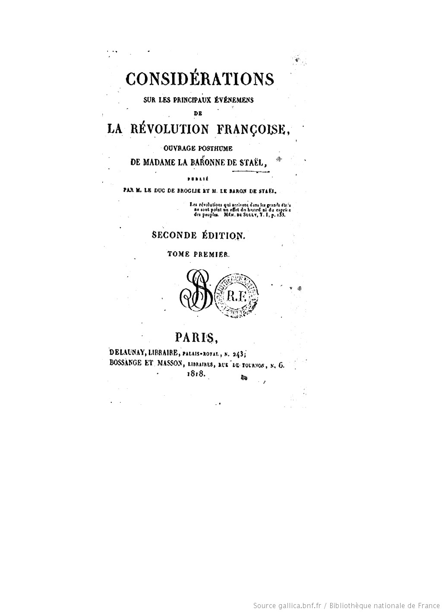
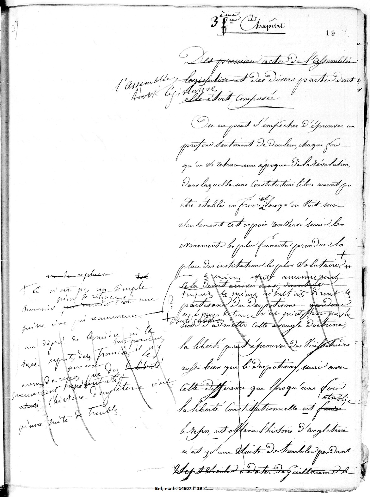
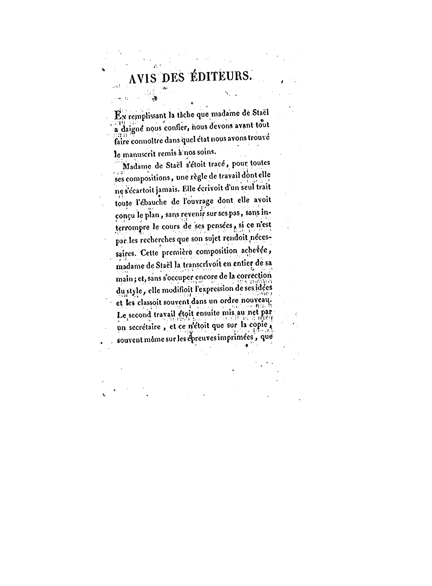
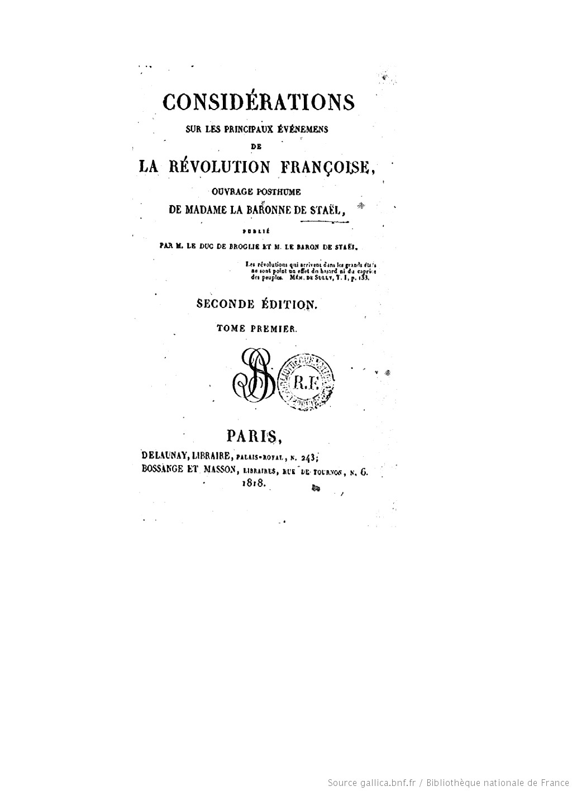
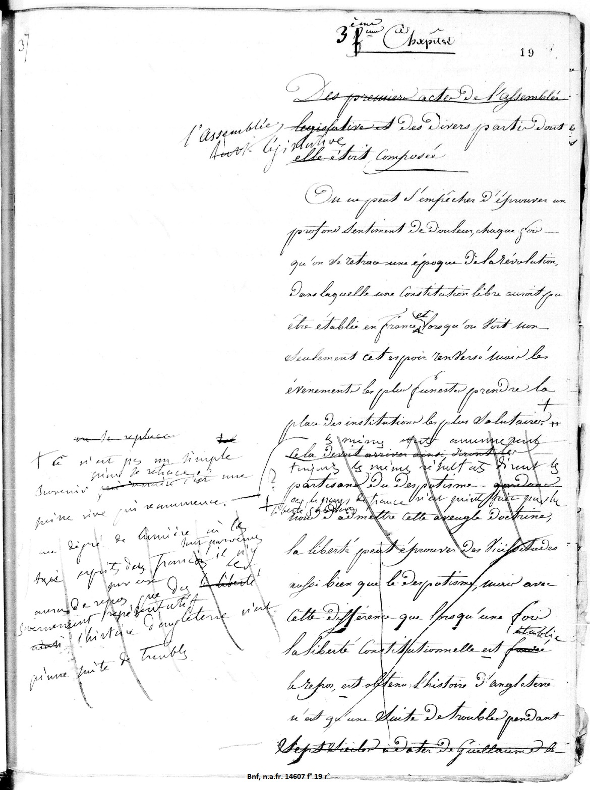
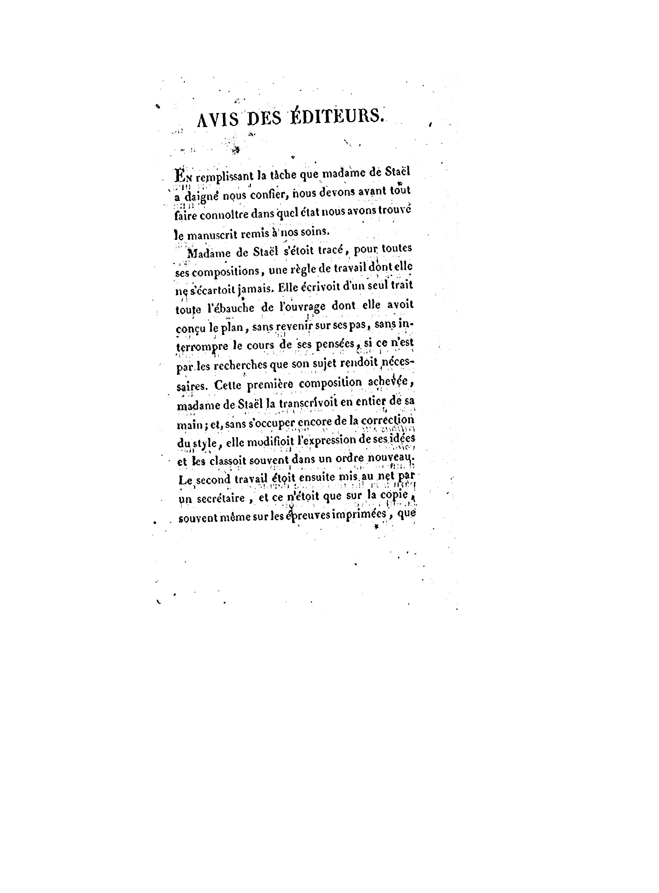

Les Considérations sur les principaux événements de la Révolution française sont le dernier ouvrage politique de Germaine de Staël resté inachevé après sa mort. En 1818, elles furent publiées par Auguste de Staël et le duc de Broglie qui ont modifié le texte originaire sous l'effet des circonstances de publication.
L’objectif de ce projet est de rendre accessible aux chercheurs et au grand public la dernière version de l’ouvrage laissée par Staël et de donner des instruments pour étudier le travail des premiers éditeurs.
 




